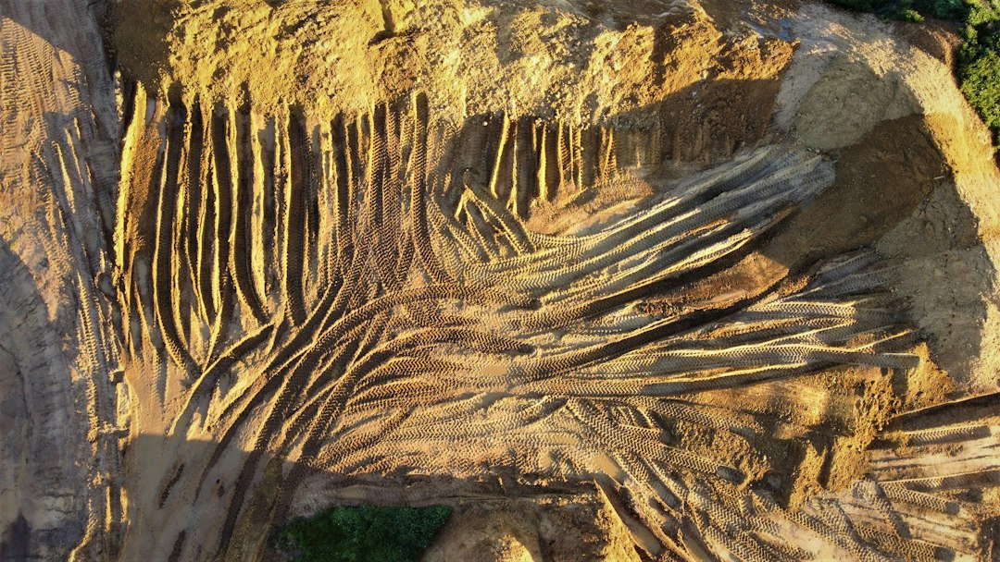

For Perth retaining projects, check retained height, drainage and material fit before choosing blockwork. The published guide states that WA's permit exemption applies only where a wall retains 0.5 m of ground or less, subject to other conditions. It also gives typical Perth quote ranges of about $250 to $600 per m2 for limestone block and $450 to $700 per m2 for concrete post and panel before excavation, drainage and engineering are added.
For homeowners comparing limestone retaining walls perth options, the useful starting point is how wall height, site slope, drainage and permit position fit together.
Limestone Retaining Walls Perth Explained
Retaining Walls Perth describes limestone as Perth's signature retaining material because the coastal sand belt sits on Tamala limestone. That makes cream limestone block a natural first quote option for visible garden edges, front levels and boundary settings where the finish is part of the brief.
The choice still has to pass a site test. Ask whether cut or reconstituted block is proposed, what height is being retained, how the base will be prepared and what drainage sits behind the wall. Stable sand does not remove the need for retaining where a level building pad, split-level block, boundary proximity or excavation face requires support.
Permit And Engineering Checks
WA's building-permit threshold is tighter than the one metre rule many people hear from interstate examples. The published guide says the exemption applies only where a retaining wall retains no more than 0.5 m of ground, is not tied to other building work or protection of adjoining land, and does not affect a boundary wall or dividing fence.
For limestone retaining walls perth projects, measure retained ground rather than the neatest visible section. A low-looking wall can still raise approval questions if it supports adjoining land or sits within other works. Taller or more complex walls should be discussed as designed structures, with AS 4678 and local government checks addressed before work starts.
- Measure the highest retained point.
- Confirm whether a fence, boundary wall or building work is involved.
- Ask whether engineering sign-off is needed.
- Check the permit position with local government before construction.
Drainage Belongs In The Quote
The guide names ag-drain, gravel and geofabric behind every wall type, linked to Perth's wet winter and dry summer cycle. Treat drainage as a scoped item, not an allowance hidden inside the wall price.
A useful quote should explain where water travels once it reaches the back of the wall, what backfill is used and how the drain can be inspected or understood later. These questions apply to limestone, concrete post and panel retaining walls, besser block, timber sleepers and rock or boulder work. Different materials change the finish and construction method, but none remove the drainage conversation.
For a broader material overview, this related Perth retaining walls guide is a useful companion read.
Comparing Wall Types
Limestone is often selected for local appearance, but it is not the only system named in the guide. Concrete post and panel walls use galvanised steel posts with slotted concrete panels, with similar systems sometimes described as precast or twin-side. Besser block is described for taller engineered retaining and rendered boundary finishes.
Timber sleepers are presented for garden terraces and low boundary retaining. Rock and boulder walls are described for sloped Perth Hills blocks. When quotes recommend different systems, compare the retained height, access, boundary condition, drainage detail and approval path rather than judging by wall face alone.
Who This Applies To
This guide is for Perth homeowners planning a new wall, replacing a leaning or bulging wall, or trying to understand why a garden level change has become an approval conversation. It is especially relevant when a site is sandy, sloped, close to a boundary or part of broader landscaping or building work.
Before requesting a written quote, prepare the wall length, approximate height, suburb or postcode, photos of both sides where accessible and a note on what sits above the retained area. Include whether the wall relates to a driveway, boundary, building pad or fence, so retaining wall builders Perth can discuss limestone, panel and post retaining walls or another system against the actual constraints.
- Measure retained ground. Record the highest retained soil level because the WA permit discussion turns on retained ground.
- Describe the site. Note slope, sand, boundary proximity and access so the material recommendation is tied to the block.
- Ask for drainage detail. Request the proposed ag-drain, gravel and geofabric arrangement in the written scope.
- Confirm approval path. Check whether engineering or a building permit is likely before work begins.
| Option | Where it may fit | Quote questions |
|---|---|---|
| Limestone block | Visible landscaping and local limestone character | Is the block cut or reconstituted, and how are drainage and retained height handled? |
| Concrete post and panel | Post and panel or precast-style retaining | Are galvanised steel posts and slotted concrete panels specified? |
| Besser block | Taller engineered walls or rendered boundary finishes | Is engineering required, and what finish is included? |
| Timber sleeper | Garden terraces and low boundary retaining | What sleeper type is specified, and is the wall within the low retaining brief? |
| Rock or boulder | Sloped Perth Hills style sites | How will drainage and batter be managed on the slope? |
Common questions
Are limestone walls automatically exempt from a permit in Perth? No. The published guide says WA's exemption depends on retained ground and other conditions, not the material. Walls retaining more than 0.5 m of ground generally need a building permit.
What should a Perth limestone wall quote include? It should cover height, length, excavation, drainage, base preparation, material type and whether engineering or a permit is likely. The guide says written quotes should be scoped to the actual site.
How do I compare limestone with concrete post and panel? Compare retained height, access, boundary conditions, drainage and finish. Limestone, concrete post and panel, besser block, timber sleeper and rock or boulder walls are presented as different options for different Perth sites.
When should an existing wall be assessed? The guide lists lean, bulging, horizontal cracking, base gaps, water seepage, pooling after rain and soil slumping above the wall as warning signs to investigate.
This guide covers Perth limestone retaining wall decisions, including material fit, drainage, quote inputs, repair signals and WA permit questions.